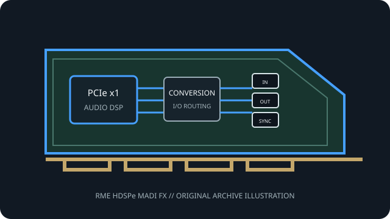

[ PROFESSIONAL AUDIO // PCIe ADD-IN ]
RME HDSPe MADI FX
A high-channel-count PCIe MADI interface with hardware routing, redundant-input modes and an integrated stereo monitor output.

MODEL SCOPE: RME HDSPe MADI FX. Three MADI I/O links, AES/EBU, word clock, MIDI and stereo monitoring; up to 192 MADI channels per direction at base rates. Confirm PCB/IS revision, accessories, slot wiring and current vendor driver before installation.
Model-specific specifications
| Model-specific SKU | RME HDSPe MADI FX |
|---|---|
| Host interface / lanes | PCI Express x1 (PCIe 1.1 endpoint); one card occupies a PCIe slot and one rear opening. |
| Codec / conversion | Digital MADI/AES transport does not perform analog conversion. Built-in stereo monitor output has RME D/A conversion; RME does not identify converter ICs on the cited product page. |
| Analog I/O | One stereo analog monitor/headphone output; no analog capture inputs. |
| Digital I/O / protocols | Two optical SC MADI I/O pairs plus one 75-ohm BNC coaxial MADI I/O pair; one AES/EBU stereo I/O; word-clock BNC and four MIDI I/O paths (breakout plus virtual MADI MIDI). |
| Resolution / sample rates | 24-bit MADI; 192 input/output channels at 44.1/48 kHz, 96 at 96 kHz and 48 at 192 kHz. AES and monitor formats follow the RME driver/clock configuration. |
| Latency / monitoring | RME specifies buffer sizes down to 32 samples on modern computers. Actual round-trip latency depends on sample rate, driver buffer, host and converter path; TotalMix hardware monitoring avoids a DAW software-monitor loop. |
| Driver / OS compatibility | RME HDSPe driver suite and TotalMix FX for supported Windows and macOS releases; confirm the exact OS, driver and firmware at installation. |
Compatibility & preservation
Three independent MADI receivers support RME Seamless Redundancy Operation. Match optical/coax wiring, clock source, MADI frame mode and driver revision; analog conversion is limited to the monitor output.
- Photograph the card label, PCB revision, rear connectors and included breakout cables before service.
- Retain the exact working driver, firmware, operating-system version, clock and routing configuration.
- Confirm lane wiring, bracket clearance, channel map and external converter/network compatibility; connector fit alone is not a compatibility guarantee.
Manufacturer sources
- RME HDSPe MADI FX — manufacturer specificationsManufacturer documentation for this model, driver family or revision.
- RME HDSPe driver-kit compatibility informationManufacturer documentation for this model, driver family or revision.